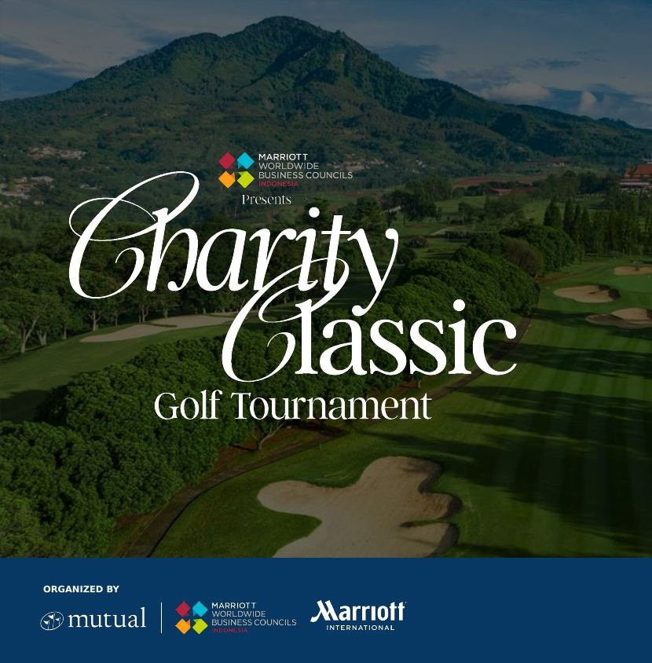

Flagship
Charity Classic Golf Tournament
An annual charity golf tournament raising funds for a clean-water project in Sumba. Mutual was the organising partner: tournament planning, event organising, promotion and marketing, and hosting the auction.
291.6K+media views
123+participants
52sponsors
 Vol. 2
Vol. 2